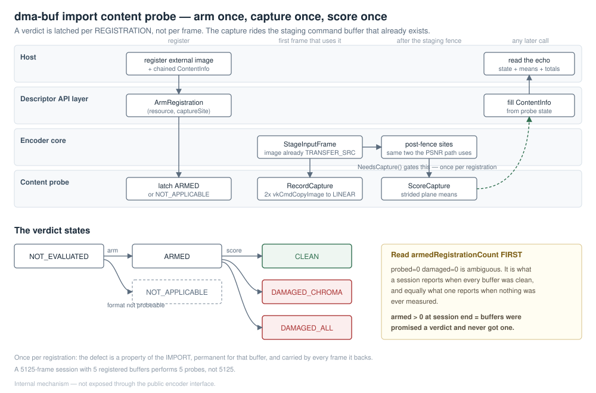

1. The failure it exists to catch
A dma-buf import can succeed at every level the API can report on — vkAllocateMemory, vkBindImageMemory, image view creation, all VK_SUCCESS — and still bind an image to memory the producer's writes never reach. The encoder then encodes that image faithfully and emits a structurally valid bitstream of a dead or green frame.
Nothing else in the library can see this. Every layer above works from handles and descriptors, and those are all correct; the damage is only visible in the pixels. The probe is the only place that reads imported pixels on the host, so it is the only place that can hold an opinion.
2. The shape of the answer
The verdict is latched per registration, not per frame.
The defect is a property of the import: it is permanent for the life of that buffer, a damaged import is not recoverable, re-importing at the next ordinal rescues it in 0 of 8 attempts, and 100% of the frames backed by a damaged buffer carry the damage. A second look therefore costs a readback and can learn nothing. A 5125-frame session with 5 registered buffers performs 5 probes, not 5125.
3. The sequence

| # | When | Call | What happens |
|---|---|---|---|
| 1 | Encoder initialisation | Configure() |
Pool depth is the encode queue depth + 2: a node is held from the record site until the post-fence score, so the in-flight set can briefly exceed the queue depth |
| 2 | The host registers an external buffer | ArmRegistration(resource, captureSite) |
State becomes ARMED, or NOT_APPLICABLE when the readback cannot ride this registration. Latched here rather than discovered per frame, so the answer travels back in the registration echo |
| 3 | First frame that uses the registration | NeedsCapture() gates RecordCapture() |
Two vkCmdCopyImage — Y and UV — appended to the staging command buffer that already exists, one command after CopyLinearToOptimalImage has read the same image in the same layout. No extra submit, fence or queue; the image is already in TRANSFER_SRC_OPTIMAL |
| 4 | After that command buffer's fence is waited | ScoreCapture() |
Host-side strided plane means off a HOST_VISIBLE｜HOST_COHERENT LINEAR pool image, from the same two post-fence sites the PSNR readback uses |
| 5 | Any later call | chained VkVideoEncoderImportContentInfo |
The caller reads state, meanY/U/V and the session totals |
| — | Unregistration | ForgetRegistration() |
Per-registration state is erased. Session totals are deliberately not decremented |
ScoreCapture() must run only after the fence has been waited. The capture is recorded into the caller's command buffer; the score reads host memory that is only valid once that submission has completed.
4. The predicate
A plane is dead when its mean is strictly below 2.0/255, expressed in Q8 as kDeadPlaneMeanQ8 = 512. The public constant VK_VIDEO_ENCODER_IMPORT_CONTENT_DEAD_PLANE_MEAN_Q8 must equal it, and a static_assert pins the two together.
| State | Meaning |
|---|---|
NOT_EVALUATED |
No verdict. The registration was never armed, or has been forgotten |
NOT_APPLICABLE |
The readback cannot ride this registration, so no verdict is possible |
ARMED |
A verdict was promised and has not arrived yet |
CLEAN |
Scored, and no plane is dead |
DAMAGED_CHROMA |
The chroma planes are dead, luma is not |
DAMAGED_ALL |
Every plane is dead |
Only VK_FORMAT_G8_B8R8_2PLANE_420_UNORM is probeable. The predicate is stated over Y, U and V plane means, so a format with no chroma planes to score has no verdict to give, and a 10- or 12-bit packed format stores its samples in the high bits of 16-bit words — a byte-wise mean would be reading the wrong half. Widening this means teaching the scorer the word layout, not adding a case to the predicate, and NOT_APPLICABLE is the honest answer until someone does.
Only every 8th row of each plane is read (kRowStride). That is a requirement rather than a micro-optimisation: a byte-wise walk of the same 3.1 MB of HOST_VISIBLE memory costs VkVideoEncoderPsnr the difference between ~200 fps and 3.6 fps. A strided mean is ample for "is this plane dead", which is the only question asked.
5. Read armedRegistrationCount before believing anything else
probedRegistrationCount == 0 && damagedRegistrationCount == 0 is ambiguous. It is what a session reports when every buffer was probed and every one was clean, and it is equally what a session reports when no capture ever ran.
armedRegistrationCount is what tells them apart: it counts registrations that were promised a verdict and have not reached one.
- Non-zero transiently is expected and correct — a registration is armed at import and scored
a frame or two later, so a mid-session poll legitimately catches buffers in flight.
- Non-zero at the end of a session, or in a long-running session where it never falls, means
the capture site is not being reached. The absence of damage reports is then an absence of measurement, not an absence of damage.
A consumer that reports "no damage" without checking this field cannot distinguish a healthy session from a probe that never ran.
probeGeneration is a non-zero build constant stamped on every path, including the paths that produce no verdict. It is the writer proof: a zeroed structure means nothing filled it in.
6. What it deliberately does not do
It does not write to stderr. A host that silences stdio, or that runs the encoder in a child process whose stderr it never reads, would lose every finding — and a diagnostic whose only signal can be discarded by the caller it exists for tells that caller nothing. Every answer leaves through the chained structure, which the caller must read.
It does not decrement session totals on unregistration. "Three of the buffers this session imported were damaged" stays true after those three are retired, and a consumer watching a falling total would conclude the damage went away.
It does not re-probe. See §2.
7. Reachability
The probe is internal, and the structures that carry its verdict — VkVideoEncoderImportContentInfo, VkVideoEncoderImportContentState and the companion VkVideoEncoderImportGuardInfo — are declared in the descriptor API's internal header, which is not on any consumer's include path.
Its consumers are the library's own white-box tests: encoder-ext-import-content, encoder-ext-import-guard and encoder-ext-format-encode --content-probe. Those tests name the internal directory explicitly in their build, which is the point — a test that reaches past the public surface should have to say so.
The public C++ encoder interface does not expose the probe and is not intended to. A host that needs import verification today gets it by running those tests against its own configuration, not by chaining a structure at runtime.